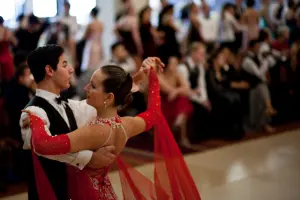

Gedeelde wortels, verschillende paden
Argentijnse tango en ballroomtango: dezelfde naam, maar verder weinig gemeen. Onze tango ontstond aan het einde van de 19e eeuw in de volkse havenbuurten van Buenos Aires en Montevideo. Geen verfijning, wel een authentieke dans van migranten, een rauwe smeltkroes van culturen op de kasseien.
Toen de tango de oceaan overstak, volgde al snel inmenging van de bourgeoisie en Britse dansleraren. In de mondaine salons van Parijs en Londen werd de innige omhelzing als te intiem, te onzedig beschouwd. De essentie werd eruit gehaald, gecastreerd, zoals ik het vaak noem tijdens mijn lessen. Door rigide regels en telbare passen ontstond de ballroomtango. Terwijl in Europa de pasjes voor de spiegel werden geteld, bleef de authentieke tango in Buenos Aires ademen op straat: wild, levendig en vol improvisatie.
Dezelfde naam, twee compleet verschillende werelden.
Vandaag de dag is er nauwelijks nog een verband. Techniek, filosofie, gevoel: het is een andere discipline. Wie het eenmaal voelt, begrijpt het verschil meteen.
Argentijnse tango: improvisatie en verbinding
De Argentijnse tango is improvisatie in haar puurste vorm. Laat alles los wat je weet over tellen of ingestudeerde choreografieën. Elke dans is een nieuw gesprek, tussen jou en je partner, in dit specifieke moment. De leider initieert met zijn lichaam, de volger antwoordt en verrijkt met versieringen, de adornos.
Alles begint en eindigt met de abrazo, de omhelzing. Borst tegen borst dansen we, en voelen letterlijk de hartslag en ademhaling van de ander. Omdat we sinds 2007 bij BE-TANGO lesgeven, blijven we erop hameren: leiden doe je vanuit je as, je centrum, nooit vanuit de armen. Die diepe, non-verbale connectie is verslavend en uniek voor deze dans.
- Volledig geïmproviseerd — geen vaste figuren of choreografie
- Gesloten, intieme omhelzing (abrazo cerrado of abrazo abierto)
- De muziek dicteert: elke dans verandert met het orkest
- Meerdere stijlen: Milonguero, Salón, Nuevo, Canyengue, Fantasía
- Gedanst op milonga's met onze eigen sociale etiquette (códigos)
En dan is er de muziek. Of we nu op dinsdagavond in onze studio vlakbij het Jubelpark staan, of op een lokale milonga in Sint-Gillis: we dansen op de muziek van de meesters uit de Gouden Eeuw. Juan D'Arienzo, Osvaldo Pugliese, Carlos Di Sarli, Aníbal Troilo. De muziek is leidend, bepaalt versnellingen en pauzes. Een goede tangodanser danst niet óp de muziek, maar wordt de muziek.
Ballroomtango: structuur, stijl en competitie
De ballroomtango is in essentie een wedstrijddans, met strikte regels, afgemeten voor juryleden en competities op topniveau. Het is de erfenis van de Britse leraren uit de jaren '20 die de tango wilden ‘kuisen’.
Een ballroomdanser is direct herkenbaar aan de typische open V-omhelzing. De heupen naar buiten, afstand tussen de bovenlichamen en een strak weggedraaid gezicht met dramatische blik. Het is scherp, staccato en theatraal. Het zachte, intieme gesprek van de Argentijnse abrazo ontbreekt volledig.
- Open V-frame: partners in offset-positie, hoofd naar links
- Vaste choreografie en gestandaardiseerde figuren
- Twee internationale stijlen: American Style en International Style
- Staccato bewegingen, vloerwerk en felle accenten
Zelfs de muziek is voorspelbaar, speciaal gecomponeerd om in die 31 tot 33 bpm te passen. De leider stuurt vaak met fysieke kracht vanuit de armen. Begrijp ons niet verkeerd: technisch is het indrukwekkend, maar het blijft sport en uiterlijk vertoon. De ziel, die rauwe, warme connectie die tango voor ons definieert, is verdwenen.

De belangrijkste verschillen op een rij
Zet je ze naast elkaar, dan is de conclusie helder: het zijn twee verschillende werelden.
| Kenmerk | Argentijnse tango | Ballroomtango |
|---|---|---|
| Structuur | Volledig geïmproviseerd | Vaste figuren en choreografie |
| Omhelzing | Intiem, gesloten of half-open | Open V-frame, afstand tussen partners |
| Muziek | Klassieke tangoorkesten, gevarieerd tempo | Gestandaardiseerd, strak 31–33 bpm |
| Doel | Verbinding en muzikale expressie | Technische perfectie en show |
| Uitdrukking | Ingetogen, subtiel, intiem | Dramatisch, theatraal, staccato |
| Context | Milonga's, sociaal dansen | Danssportcompetities, ballrooms |
In Brussel vragen mensen ons vaak: "Wat is nu eigenlijk beter?" Maar dat is appels met peren vergelijken. Ballroom is topsport en show. Argentijnse tango is een taal, een sociale dans die je 's avonds op een milonga beleeft, voor jezelf en de connectie met je partner. De keuze is aan jou.
Welke stijl past bij jou?
Jouw keuze hangt af van je persoonlijke voorkeur. Wil je een lichaamstaal leren waarmee je overal ter wereld—van Buenos Aires tot Tokyo—met onbekenden kunt ‘spreken’? Zoek je rust en verbinding in het moment? Dan is de Argentijnse tango iets voor jou.
Krijg je energie van strakke lijnen, jury's en het perfectioneren van choreografieën? Kies dan voor de ballroomtango. Helemaal prima.
Maar hier bij BE-TANGO in Brussel hebben we bij de start in 2007 al gekozen. Wij ademen de authentieke Argentijnse tango. Voor ons is het de puurste, meest menselijke dans die er bestaat. Wij staan op voor de magie van die ene, perfecte abrazo. Wil je dat gesprek zonder woorden zelf ervaren? Kom langs in de studio en voel het op de dansvloer.
Kunnen ballroomdansers overstappen op Argentijnse tango?
Absoluut! Als iemand die sinds 2007 tango doceert, heb ik veel ballroomdansers de overstap zien maken naar Argentijnse tango. Het gaat niet altijd naadloos, maar de beloningen zijn de moeite waard. Een van de grootste uitdagingen is het afleren van het strakke frame. Ballroomtango benadrukt een sterke, vaste verbinding tussen partners, terwijl Argentijnse tango prioriteit geeft aan een meer vloeiende en responsieve abrazo. Improvisatie omarmen kan in het begin ook ontmoedigend zijn. Ballroomdansers zijn gewend aan ingestudeerde stappen en choreografie, terwijl Argentijnse tango gedijt op spontaniteit en reageren op de muziek en je partner. Ten slotte kan de hechte omhelzing onbekend of zelfs ongemakkelijk aanvoelen voor sommigen, maar het is essentieel voor de intieme verbinding die Argentijnse tango bevordert.
Ballroomdansers beschikken echter vaak over waardevolle troeven die hun overgang helpen. Ze hebben doorgaans een sterke basis in muzikaliteit en lichaamsbewustzijn, wat cruciaal is voor het begrijpen en interpreteren van tangomuziek. Ze hebben ook de neiging om een goede houding en voetenwerk te hebben. Om de overstap soepeler te laten verlopen, raad ik aan om je te concentreren op het ontspannen van het frame, aandachtig naar de muziek te luisteren en je over te geven aan het moment. Begin met de basis en introduceer geleidelijk complexere stappen naarmate je vertrouwd raakt met de improvisatorische aard van Argentijnse tango. En het belangrijkste: wees geduldig met jezelf! De reis is een deel van de vreugde.
De muziek: waarom het totaal anders klinkt
De muziek is misschien wel het meest opvallende verschil tussen ballroom en Argentijnse tango. Ballroomtango maakt vaak gebruik van moderne orkestarrangementen, soms zelfs popsongs aangepast voor tango. Het is ontworpen voor een meer eigentijdse, gemakkelijk verteerbare sound. Argentijnse tango danst daarentegen bijna uitsluitend op opnames uit de "Gouden Eeuw" van de tango, ruwweg de jaren 1930 tot 1950. Denk aan orkesten zoals die van Carlos Di Sarli, Juan D'Arienzo, Aníbal Troilo en Osvaldo Pugliese. Deze opnames hebben een rauwe, emotionele diepte die moeilijk te evenaren is.
Het verschil is niet alleen stilistisch; het is emotioneel. De Gouden Eeuw-orkesten roepen een gevoel van nostalgie, verlangen en passie op dat perfect past bij de hechte omhelzing en de improvisatorische aard van de Argentijnse tango. Als je nieuwsgierig bent, luister dan eens naar "La Cumparsita" van Fresedo of "Adios Muchachos" van D'Arienzo. Je hoort meteen het verschil. Tijdens onze lessen hier bij BE-TANGO spelen we altijd authentieke Gouden Eeuw-tango, zodat je vanaf dag één in de juiste sfeer wordt ondergedompeld. Je kunt zelfs de geschiedenis van de Argentijnse tango verkennen om de context van de muziek te begrijpen.
Sociaal dansen versus competitief dansen: een fundamentele scheiding
De grootste scheiding ligt in de sociale context. Ballroomtango is primair gericht op competitie, met zorgvuldig gechoreografeerde routines die worden beoordeeld door een panel van experts. Argentijnse tango is echter fundamenteel een sociale dans. Het gaat om verbinding, communicatie en gedeelde ervaring. De sociale dansevenementen worden milonga's genoemd, en ze vormen het hart en de ziel van de Argentijnse tango.
Er zijn geen juryleden op een milonga. In plaats daarvan hebben we *codigos*, ongeschreven regels van etiquette die ervoor zorgen dat iedereen een veilige en plezierige ervaring heeft. Deze *codigos* gaan over het respecteren van je partner, de muziek en de flow van de dansvloer. Ze staan ver af van de rigide regels en voorschriften van competitieve ballroomtango. De nadruk van de Argentijnse tango op improvisatie en verbinding maakt het beoordelen inherent subjectief en, eerlijk gezegd, in strijd met de geest ervan. Het gaat om het voelen van de muziek en het verbinden met je partner, niet om het imponeren van een jury. De vreugde komt voort uit de dans zelf en de gemeenschap die het creëert. Je vindt hier in Brussel een bloeiende Argentijnse tangogemeenschap met regelmatige milonga's overal in de stad.
Veelgestelde vragen
Wat is gemakkelijker te leren?
Dat hangt af van je leerstijl! Ballroomtango, met zijn gestructureerde stappen, lijkt in eerste instantie misschien gemakkelijker. De nadruk van de Argentijnse tango op improvisatie en verbinding kan echter uiteindelijk meer voldoening geven. Velen vinden dat Argentijnse tango gemakkelijker te "voelen" is en zich gemakkelijker met de muziek verbindt.
Kan ik meedoen aan Argentijnse tangowedstrijden?
Hoewel er enkele Argentijnse tangowedstrijden zijn, zijn deze heel anders dan ballroomwedstrijden. Ze hebben de neiging zich meer te richten op improvisatie en muzikaliteit dan op rigide techniek. De kern van de Argentijnse tango blijft echter sociaal dansen op milonga's.
Werken ballroom tangoschoenen voor Argentijnse tango?
Hoewel je ballroom tangoschoenen *kunt* dragen voor Argentijnse tango, zijn ze niet ideaal. Argentijnse tangoschoenen hebben doorgaans een flexibelere zool en een andere hakvorm, wat zorgt voor meer bewegingsvrijheid en een betere verbinding met de vloer. Als je van plan bent regelmatig Argentijnse tango te dansen, is het aan te raden om te investeren in een paar goede schoenen.
Welke heeft meer sociale dansmogelijkheden in Brussel?
Zeker Argentijnse tango! Brussel heeft een zeer actieve Argentijnse tangoscene, met milonga's die bijna elke avond van de week plaatsvinden. Je vindt er volop mogelijkheden om te oefenen en in contact te komen met andere dansers. Ontdek waarom je tango zou leren dansen in Brussel en je zult de actieve sociale scene ontdekken.
Is de ene romantischer dan de andere?
Romantiek is subjectief, maar velen vinden Argentijnse tango inherent romantischer vanwege de hechte omhelzing, intieme verbinding en gepassioneerde muziek. De improvisatie en non-verbale communicatie dragen ook bij aan een dieper gevoel van verbinding tussen partners.